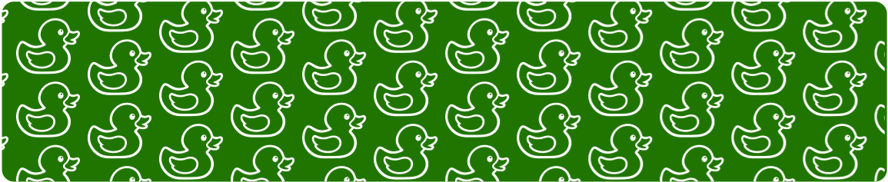

Piscinas saludables
¡Al agua, patos!
Actividades y servicios acuáticos para todas las edades.
«¡Al agua, patos!» es una propuesta de programa municipal de actividades acuáticas dirigida a personas de todas las edades, que reúne opciones de aprendizaje, natación, ocio, ejercicio físico y bienestar.
Su finalidad es fomentar la práctica de actividades acuáticas, promover hábitos saludables y acercar a la ciudadanía los distintos servicios y espacios disponibles en las instalaciones municipales.
Actividades y participación
Información sobre las actividades y servicios acuáticos.